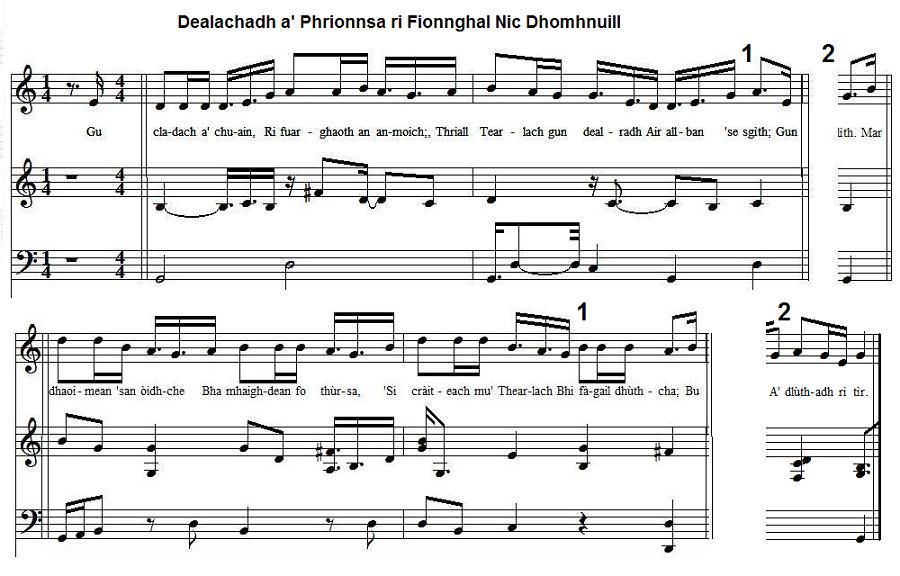

Dealachadh a' Phrionnsa ri Fionnghal NicDhòmhnaill
The Prince's Parting from Flora McDonald
Adieux du Prince à Flora McDonald
The legendary idyll in Gaelic language
by D.B. MacLeòid
from 'Bliadhna Theàrlaich' (John MacKenzie ed., 1844) p. 270.

*
Click to hear the melodies (sequenced by Christian Souchon)
|
To the tune:
As stated at the "Daltai Discussion Forum" (www.daltai.com/discus/messages/13510/19605.htmll?1161101954), the song "Eirinn gu Bràth" is Scottish Gaelic, not Irish. "It tells the story of a Highland Scot who is mistaken for an Irishman. The first four lines are presented here, My name's Duncan Campbell from the shire of Argyll I've travelled this country for many's the mile I've travelled through Ireland, Scotland and a' And the name I go under's bold "Erin-go-bragh". ...The correct [Irish] spelling is "Éireann go Brách..." The phrase became Anglicized, it was already in use as "Erin Go Bragh" by 1847. In that year, a group of Irishmen serving in the U.S. Army during the U.S. - Mexican War deserted and joined the Mexican side. These soldiers, known as "Los San Patricios", or Saint Patrick's Battalion, flew as their standard a green flag with a harp on it, with the motto "Erin Go Bragh" underneath it." Several variants to this tune exist: Ellen O’Leary’s, Hennigan’s Favourite, etc. (as stated at the "Fiddler's Companion" site (see Links). To the lyrics The summary of the below song, at the site "Tobar an Dualchais" (www.tobarandualchais.co.uk/fullrecord/49240/1), reads as follows: "This is a romanticised view of the parting of Prince Charles Edward Stuart and Flora MacDonald on the shore. It describes Flora as tearful, and the Prince as tired and upset. She is sad that the Prince has not gained the crown and that so many have died. She will always be unhappy that her beloved Charles has gone from her... Eight 16 line verses are sung...In "Bliadhna Theàrlaich", (John MacKenzie ed., 1844), the author of the song is listed as D. B. MacLeòid." [The poem is not in McKenzie's "Sàr-Obair nam Bards Gaelach", 1865]. Nothing, apparently, is known about D.B. McLeod. But what Mrs Virginia Blankenhorn in "Scottish Studies" wrote in "Traditional and Bogus Elements in MacCrimmon's Lament" applies to the present piece: "The style and sentiment of the account are far more representative of nineteenth-century English romance than of the Gaelic point of view at any period". We may for instance assume that its author was inspired, among others, by Hogg's "Flora's Lament". In fact the parting of Charlie, who was to cross the sound of Raasay, and Flora took place in an inn in Portree (Skye) on 29th June 1746. Several persons were present. |
A propos de la mélodie:
Selon un intervenant au "Daltai Discussion Forum" (www.daltai.com/discus/messages/13510/19605.htmll?1161101954), le titre "Eirinn gu Bràth" est du gaélique d'Ecosse, non d'Irlande. "Le chant parle d'un Highlander que l'on prend pour un Irlandais. En voici les quatre premiers vers: Je m'appelle Duncan Campbell, natif de l'Argyll J'ai fait dans ce pays des miles et des miles J'en ai fait en Irlande, en Ecosse et ailleurs Et l'on m'appelle "Erin-go-bragh" le voyageur. ...L'orthographe correcte [en irlandais] est "Éireann go Brách..." L'expression est devenue anglaise; on l'utilisait sous la forme "Erin Go Bragh" vers 1847. Cette année-là, un groupe d'Irlandais servant dans l'armée des Etats-Unis pendant la guerre qui les opposait au Mexique, désertèrent au profit des Mexicains. Ces soldats, appelés les "Los San Patricios", (les "Saint-Patrick"), arboraient un étandard vert avec une harpe soulignée de la devise "Erin Go Bragh"." Il existe plusieurs variantes de cet air: Ellen O’Leary’s, Hennigan’s Favourite, etc. (selon le site "Fiddler's Companion" (cf. Liens). A propos des paroles: Le site "Tobar an Dualchais" (www.tobarandualchais.co.uk/fullrecord/49240/1), résume ainsi le chant qu'on va lire: "C'est le récit à la manière romantique des adieux du Prince Charles Edouard Stuart et de Flora MacDonald sur les côtes d'Ecosse. Il nous montre une Flora éplorée et un Prince fatigué et inquiet. Elle est triste que le Prince n'ait pas recouvré la couronne et que tant d'hommes soient morts. Que son bienaimé Charles la quitte la rendra pour toujours malheureuse... Huit strophes de 16 vers sont chantées...Selon "Bliadhna Theàrlaich", (John MacKenzie, édition 1844), l'auteur est un certain D. B. MacLeòid." [Ce poème ne figure pas dans les "Sàr-Obair nam Bards Gaelach", publiés par le même McKenzie, en 1865]. On ne sait rien, semble-t-il, de ce D.B. McLeod. Mais on pourrait dire, au sujet de ce chant, ce que Virginia Blankenhorn écrivait dans "Scottish Studies", dans son étude "Tradition et Eléments factices dans l'Elégie de MacCrimmon": "Le style et l'esthétique de ce récit relèvent plus du romantisme à l'anglaise du 19ème siècle qu'il ne reflète le point de vue des Gaëls de quelque époque que ce soit". On peut en particulier supposer que l'auteur s'est inspiré, entre autres, des "Lamentations de Flora" de Hogg. En réalité, les adieux de Charles, qui allait se rendre sur l'ïle de Raasay, et de Flora eurent lieu dans une auberge de Portree (Skye) le 29 juin 1746. Plusieurs personnes étaient présentes. |
|
1. To the ocean's margin, Whilst cold wind is blowing, Prince Charles in the evening, Exhausted, draws near. On his breast is no star. His followers are far. Only blue-eyes are Watching what happens here. In the night a diamond Was the lass, yet frightened, As her Charles abandoned Forever Scotland. Now she gives heavy sighs With sore tears in her eyes As the oarsmen she spies Approaching their stand. 2. The pale moon on the wane O'er the rocky mountain, Whose reflections did stain The near breaking waves, Suddenly has stood still, Since her wan cheek she will Hide in the clouds that fill The heavenly caves. So will the stars dotted O'er the sky or clotted, While with deep sighs started Winds renting the airs; Bewailed by the ocean, With cliffs' flagellation, Devastated Nation, Are your murdered heirs! 3. Flora and Charlie gazed On the shore at the waves; And their hearts were near to Break under the strain. Not in mood for a speech Now they looked hard at each Other and their silence Did their love proclaim. But the barge is coming And the maiden begins In low tone whispering, A confused descant, As would she a harp's strings Caress without tuning, Under efforts at last To her pain gives vent. 4. "O Charles, the son of James, Son of kings of that name, Alas for your crown a Boor is vested with! Alas for the warriors Who were your followers Whose eyes were closed by the Deep slumber of death. They won't grasp their long swords, To fight they can't afford, To scatter the English Like straw in the fields. They won't seize your banner You would hand them over The churchyard has them who Left their hiding shields. 5. "O, Charles the son of James, You must depart from us Who rescued our Chief from The fangs of the beast; The men of the cutter Across the blue breakers Unswervingly progress: The distance decreased! In view of the blades of The enemy's soldiers The wise conduct to have Is to flee away; For in doleful exile Though "rebel" be his style, A foreigner will be Safe from bloody fray. 6. "O Scotland, brace yourself For oncoming tempests! Your braves in their graves paid For your Prince's feats. The croon of pipes may be Forbidden presently, As long as sweet harpers Will give you a treat: On yonder sycamores Keep silent, winged harpers, Do not pour your warble On my Charles's breast, Lest the braves would awake On battlefields; Don't make -Too loud is your song - The dead rise from their rest! 7. "Ruin's wheel drove over us Now we are defenceless, To foreign abuses Fate gave up our cause; Fair play of the Féinne Unknown to enemy Would have allowed our blades To drive back the foes: We have been vanquished By gales that endeavoured A bare-cutting shower In our eyes to spray; And mangled by growling Obstinate gun firing; - Or else our eagerness Had carried the day. 8. "O farewell, my sovereign Whose cause is forsaken, But always my blessing On your banner be! By time won't be healed The wound to me caused Nor my distress cured By any ditty. At greenery in summer, Or dance by the river Rejoice every creature As suits them in May! To me there's no solace, But torment and distress As long the son of James, Charles will be away!" 9. She stopped; the rose red lips Of the maiden he kissed And with his handkerchief He wiped her tears. "Take solace, dear Flora, In France new supporters Will rise and hand over The crown to its heirs. There will angry young men In Scotland awaken With well harnessed horses: A twice as large host All over the Highlands With loud sounding clarions. All trooper battalions Shall on them be lost." 10. He left her, that evening. But she was still waiting, Saw him near the railing Of the boat. He waved. With sorrow heaved her breast, Was with grief near to burst: No farewell speech was said And no music played. Now in the cold twilight The fair maiden that night Was in mind with her knight Charles on the ocean; Would no more speak with him Till her last heart beating. Days would pass increasing Her true devotion. (Transl. Christian Souchon (c) 2015) |
1. Gu cladach a' chuain, Ri fuar-ghaoth an anmoich; Thriall Tearlach gun dealradh Air allaban 'se sgìth; Gun reull air a bhroilleach, No freiceadan a' falbh leis Ach ainnir nan gòrm-shul Bu dealbhaiche lìth. Mar dhaoimean 'san òidhche Bha mhaighdean fo thùrsa, 'Si cràiteach mu' Thearlach Bhi fàgail a dhùthcha; Bu trom air a h-osna, 'S bu ghoirt deòir a sùilean 'Nuair chunnaic i'n iùbhrach A' dlùthadh ri tìr. 2. Bha ghealach a' tearnadh Thar àirde nan stùc-bheann, 'S gathan gu siùbhlach Air dlù-thonna 'leum; Ach ghrad thug i 'n aire, 'S mar òigh air a ciùradh Chuir sgàil air a gnùis-ghil De dhù-neoil nan speur; A's dh' fhalaich na reulltan Iad fèin anns a' ghorm-bhrat, Bha osna na gaoithe 'Trom chaoidh na bha falbh lea, 'S be gearan a' chuaìn An àm bualadh ri garbh-chreig: " Mo lèir-chreach an Albainn 'S ann mharbhadh na tréin!" 3. Sheas Flòraidh a's Tearlach Air tràigh nan tonn caoir-gheal, 'S bu bhrist-chridheach aog-neulach 'N aogas le cràdh; Gun fhacal o 'm bilibh Ach sileadh gun chaochladh, 'S iad aodann ri aodainn Air glaodhadh le gràdh! Ach thainig a' bhirlinn, 'S i 'n ribhinn a thòisich, Le brist-ghuthan anmhuinn, Air seanachas gu dòimheach; Mar chlàrsach 'sa teudan Gun ghleusadh gun òrdugh, Bha reuU nam ban òga Fo dhòrainn 's fo spàirn. 4. " A Thearlaich mhic Sheumais, 'Ic Sheumais nan cùirtean, Mo leòn-sa do chrùn 'bhi Air ùmaidh gun euchd; Mo leòn-sa na treun-laoich, Cba 'n èirich 's cha dùisg iad A trom-chadal dùint-shuileach, Udlaidh an èig! Cha ghlac iad an lann anns A' chàmp ri uchd nàmhaid, Cha sgap iad fir Shasuinn Mar asbhuain 'sna blàraibh, Cha'n fhaic iad do bhratach, 'S cha ghlac iad air làimh thu ; — Ni sàile 's am bàs Bhur fad fhàgail o chèil 5. " A Thearlaich mhic Sheumais, Mu dh' fheumas tu triall uainn, Gu'n coimhid do Thriath thu Bho fhiaclan nan daoi; Gu'n stiùir e an iùbhrach Thar dlù-thonnan liath-ghlas, Gu rèidh-shligeach, dian-shiùbhlach, Fior-luath gu tìr! Gu'm boillsg anns an òidhch' ort, Na soillsearan nèamhaidh, Gu h-iùlmhor ga d' ghiùlan Gu tùbh anns nach feum thu 'Bhi t' fhògarach brònach, Fo chòmhdach mar reubalt, Aig allamharach éitidh, Neo-spèiseil gun chlì! 6. "O! Alba! tha 'n t-àm aig Do cheannsa bhi dòrtadh, — Do Phrionns' uat air fhògradh, 'S do laochraidh 'san uaigh; Bi'dh crònan do phìobun A' sìor-dhiùltadh ceòil dhut, 'S do chlàrsairean rò-mhilis Dòimheach gach uair: Bi'dh cruitearan sgiathach Nam fior-chrannaibh sàmhach, Cha dòirt iad an ceileir Am broilleach mo Thearlaich, Cha dùisg iad na treun-laoich A dh'eug anns an àraich, 'S cha mhosgail ara bàs dhaibh Air àirdead am fuaim. 7. " 'Se chuibhle dhol cearr oirnn A dh' fhàg sinn san àm so Fo smàdadh nan Gall Ann an calldachd na cùis'; Na 'n robh cothrom na Fèinn' Aig na treun-laoich 'san teanndachd, Bu roinn-bhiorach lann daibh 'Cuir nàimhdean an cùil: Mu'n d' fhaod iad 'bhi shìos Bhrùchd sian as na speuran, Gu trom-fhrasach, lom-sgaiteach, Steall-bhras 'nan eudann, Fo riasladh a's tìadh-bhuirich Iargalt nam beur-ghunn' ; — Cha d' fhaod na fir ghleusda Bhi reubadh le sùrd. 8. " Ach soraidh, mo Phrionns', leat A dh' ionnsaidh na h-uaghach, 'S mo bhannachd gach uair leat Fhir uasail nan sròl! Cha slànaich ri'm' aimsir Mo sbearbh-lotan cruaidhe, 'S cha dùisg mi bho smuairean Ri duan no ri ceol: Bi'dh ùr-luibhean sàmhraidh A' dàmhs' air an rèidhlein, A's càileachd gach dùil Mar is dù dhaibh n'an cèitean, Ach domhs' <;ha 'n eil sòlas Ach dòrainn a's lèireadh, Gun Tearlach mac Sheumais, Mo chèille n'am chòir!" 9. Ach stad i ; 's le 'ròs-bhilibh Phòg e a' mhaighdean, A' siabadh gu caoimhneil Na deuraibh o 'sùil; — " Glac sòlas, a Fhlòraidh Tha òganaich Fhràngach A dh' èireas neo-ghann leam A bhuannachd mo chrùin; 'S thèid lasgairean fearg-ghlonnach Albuinn a' dhùsgadh, Le'n trusganan balla-bhreac, 'S an armaibh math dùbailt; Thèid cath-thromp nan Garbh-chrìoch Le borb-sgreud 'sa bhùraich, 'S bi'dh trùpairean ciùirte Gun lùgh anns gach cùil!" 10. Ach dh' fhàg e i caoineadh Na h-aonar air fàireadh, A's sheòl e 'sa bhàt' uaip A' fàsgadh nan dòrn: Bha' cliabh air a lionadh Le iargain a' sgàineadh, S i airtneulach, ànrach, Gun mhànran, gun cheòl; Laidh fuar-dhealt na h-òidhch' Air a' mhaighdein ghlain àluinn, 'Sa' h-inntinn gu luaineach Air chuan mar ri Teàrlach, Cha 'n fhac i e tuille Gu 'bhuillean a phàigheadh, Ach mhiadaich a gràdh dha Gach là 'bha i beò! |
1. Ce soir sur la côte Sans aucune escorte Charles dans la bise Va quitter ces lieux. Sans belle médaille; Seule l'accompagne Une jeune dame Aux charmants yeux bleus. Un diamant dans l'ombre Mais son regard sombre Vient trahir l'angoisse Qui ronge son cœur. Le départ de Charles Fait couler ses larmes Lorsque dans la crique L'on voit les rameurs. 2. La lune décline Dessus la colline. Sa blanche opaline Luit sur les brisants. Mais elle s'arrête Et cache sa tête Sous la sombre couette Du bleu firmament. L'étoile l'imite Et le ciel bien vite S'assombrit, qu'irritent Les soupirs du vent. L'océan qui fouette Les rochers répète "On brise l'Ecosse; On tue ses enfants!" 3. Si Charles regarde L'écume des vagues Les yeux pleins de larmes, Flora tout autant, C'est que dans leurs bouches Les mots s'effarouchent: Ils disent qu'ils s'aiment Tout en se taisant. Mais voici qu'approche La barque des roches, Et la jeune fille Entame un discours. Confuses paroles: De sa harpe folle Les mots qui s'envolent Sont des mots d'amour. 4. "Charles, fils de Jacques, Né d'un roi que chaque Jour qui passe éloigne D'un trône usurpé; Je pleure les braves Que, funeste entrave, La mort dans l'éternel Sommeil a plongés. Ces lames nous manquent Et l'ennemi campe Chez nous, sûr que nul ne Peut l'en déloger. Ces âmes altières Sont au cimetière: Nul sous ta bannière N'ira se ranger. 5. "Charles, fils de Jacques Il faut que tu partes Loin de nous qui t'avons Sauvé du trépas. La barque s'apprête A franchir les crêtes Des premiers brisants et N'est plus loin déjà. Les armes hostiles Dans le lointain brillent Le bon sens l'exige: L'exil est ton sort. En terre étrangère: Un rebelle est frère L'indifférence est le Remède à la mort. 6. "Tu vas vivre, Ecosse, Des instants féroces: Ton Prince en exil, Ses soldats au tombeau. Plus de cornemuses; Qu'importe! Des muses Ailées y pourvoiront: Les doux chants d'oiseaux. Vous chantez encore Sur les sycomores. Epargnez à Charles Un tourment inouï: Vos voix soient légères Pour que de la terre Ne surgissent ceux Qui moururent pour lui. 7. "Roue de la Fortune Par qui tous nous fûmes Livrés aux massacres De vils étrangers, Que n'as-tu fait tiennes Les règles des Féinne! L'issue fût certaine: Ils eussent plié. Pourquoi la bourrasque Qui cinglait nos faces Et cette pluie aveu- glaient-elles nos yeux? Sans le bruit immonde Du canon qui gronde, Notre bel enthousiasme Aurait triomphé! 8. "Prince, ainsi s'achève Ton superbe rêve, Mais à jamais je Bénirai ton drapeau. Bien que rien ne dure, Au cœur ma blessure Le temps ne la guérira Point de sitôt. L'été la nature Verdit les ramures Chaque créature Exulte quand vient mai. Mais ces réjouissances, Je le sais d'avance, Loin de Charles, ne Sauraient me consoler!" 9. Et quand furent closes Ses lèvres de roses, Charles les baisa tout En séchant ses pleurs. "Tu le sais, je pense, On m'attend en France: Des jeunes gens qui Me rendront mon honneur. Et ici j'augure Qu'hommes et montures Feront un armée Comme il n'en fut jamais Au son des trompettes Les Highlanders met- tront fin aux excès des Cavaliers anglais." 10. Il s'éloigne, preste, Tandis qu'elle reste. Il lui fait un geste à Bord du vieux rafiot. Ah qu'il était triste Ce départ sinistre! Sans musique et sans Discours: pas un seul mot! Blottie dans sa cape En esprit s'échappe Flora pour suivre Charles sur l'océan. Puis les jours passèrent, A l'heure dernière: Flora chérissait toujours Son bel amant. (Trad. Christian Souchon (c) 2015) |